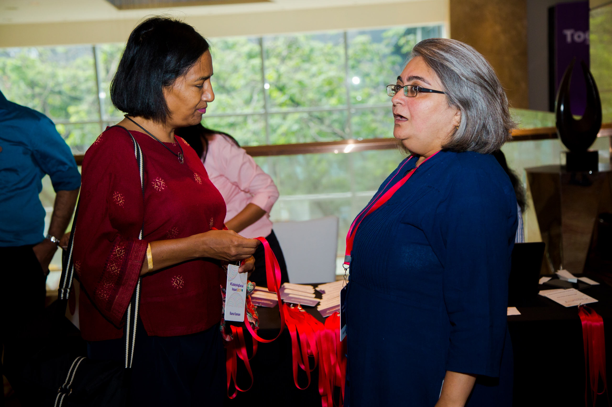
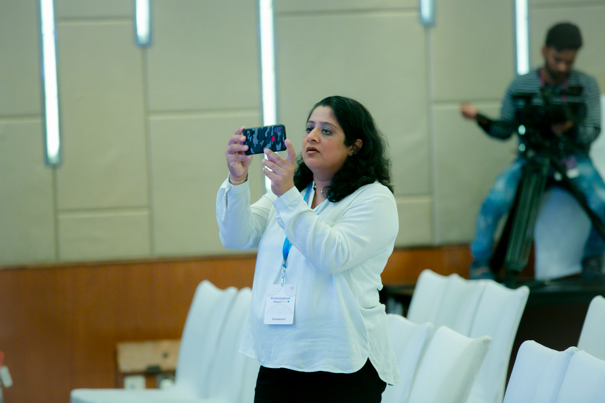

How can you contribute?
Catalysing Social Impact [CSI] is a space for everyone. Whether you are a thinker, doer, investor or just an observer, we have opportunities for everyone to come together to ignite positive changes in the field of social impact through strategic initiatives.
Here is how you can contribute:
- Non-Governmental Organisations and Civil Society Organisations: NGOs and CSOs can play a vital role by engaging as collaborators and enhancing the reach of CSI 2024, bringing in key stakeholders and perspectives. NGOs and CSOs can also leverage this opportunity to showcase their products and innovations for social impact at the exhibition.
- Funders and Sponsors:CSI 2024 provides funders and sponsors a platform to gain visibility, directly engage with social innovators to gauge insights into emerging trends, scope potential opportunities of interest, and co-develop forward-thinking business strategies.
- Implementing Organisations: Implementing organisations can access collaborative opportunities and contribute to the conversations through their on-ground experiences to enhance project reach and effectiveness.
- Volunteers: CSI 2024 provides experienced individuals in the sector an opportunity to learn from and work with an experienced mentor and expand their network. Even if you do not fall into these categories, we encourage you to explore the interest form and the sign-up form for the working groups linked below to find the right space for you at CSI 2024:
Even if you do not fall into these categories, we encourage you to explore the interest form linked below to find the right space for you at CSI 2024

